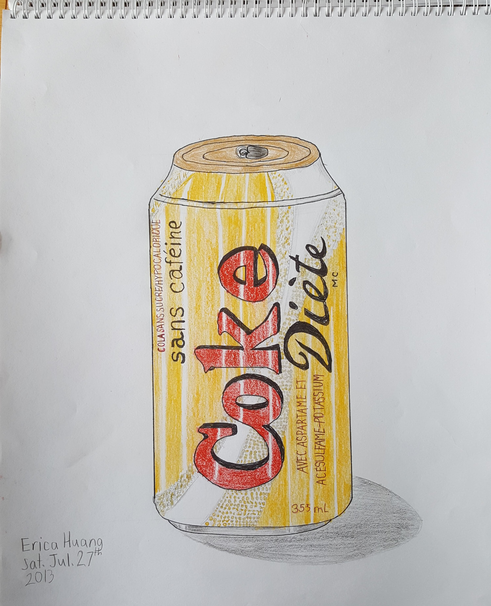

The arts are a big part of my life. From dancing ballet to just listening to music at home, I've always enjoyed them.
-
Dance
I've been dancing ballet since kindergarten, and it's something I still love to this day. I also enjoy
exploring other types of dance, including just freestyle. The studio I take classes at is The School of
Toronto City Ballet. Usually, at the end of every school year, the entire studio performs at the FLATO
Markham Theatre, but that won't be happening because of the pandemic. Our classes have also become
online Zoom meetings for the same reason. The repertoire we learn in class is for the Royal Academy
of Dance (RAD) exams. I am currently learning the Advanced 1 (A1) dances.These pictures show me in a few of the costumes I've danced in through the years. The picture furthest
Music Visual Arts
to the right is the ending of a long dance our class did with dancers in higher grades. -
Music
I love listening to many kinds of music, but I mostly listen to pop. I like to listen while studying,
Dance Visual Arts
biking, doing chores, and basically any chance I get. Most of the time, I'll sing along as well
(my voice isn't the best though).
I like to play other instruments, too. At school, I played the French Horn for band, and joined the
choir. Outside of school, I used to take piano lessons. I passed the Level 8 exams a few years ago,
but I haven't done anything further yet. Every now and then, I just play song covers for fun. Anyway,
I've put one of my performances here, if you want to see it.
-
Visual Arts
When I was younger, I took painting and sketching lessons for a few years.

I still can't draw people, though.
Here's some art I've made...
I learned how to create augmented reality (AR) art in a virtual workshop just last summer.
Dance Music Top
It was a lot of fun, and I'm pretty happy with the final piece of art I ended up creating. We used
the Artivive platform, and you need the Artivive app to be able to view the AR. I put my
target image below; if you're interested in viewing the AR, you'll have to download the app. Then,
you just open the app, point the camera to the target image, and you'll see the AR on your device.